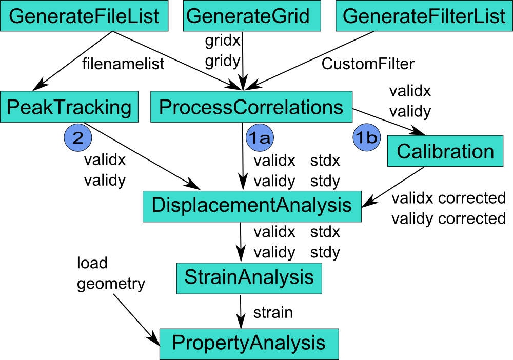

Digital Image Correlation and Tracking Procedure
The main gui is opened when you type 'DIC.m' at the MATLAB command prompt and press 'ENTER':

Functions (for details see menu entries on the left):
- Generate file list
calls 'GenerateFileList.m'
- Generate grid
calls 'GenerateGrid.m'
- Generate filter list
calls 'GenerateFilterList.m'
- Check image quality
calls 'CheckImageQuality.m'
- Process correlations
calls 'ProcessCorrelations.m'
- Analyze results
calls 'DisplacementAnalysis.m' and 'StrainAnalysis.m'
- Create calibration
calls 'CreateCalibration.m'
- Apply calibration
calls 'ApplyCalibration.m'
- Check image quality
calls 'CheckImageQuality.m'.
- Average image stack
calls 'AverageImageStack.m'.
The DICT procedure contains two different ways to obtain the marker positions with its associated displacements and strains at defined sample locations:
- Calculating the correlation coefficient for a fixed grid of markers
- without calibration
- with calibration (with corrected marker positions)
- Peak tracking of characteristic features (e.g. bright round spots on dark background).

Input and output files:
- Image files
Should be 8 bit greyscale Tiff (*.tif) images with consecutive numbering.
- 'filenamelist.mat'
Contains the names of the images in the list.
- 'timeimage.txt'
Contains the capture time of the images. If you modify an image, make sure that the original time is preserved.
- 'gridx.dat','gridy.dat'
Contain the x- and y-pixel positions of the initial grid created by the 'GenerateGrid.m' function. You can create your own grid with Excel and save it as tab delimited ASCII files (two files with column vectors or matrices of equal size).
- 'CustomFilter.cfg'
Contains the list of custom filters selected by the user.
- 'validx.dat','vaildy.dat'
Contain the position of each marker for each image in columns as tab delimited ASCII files.
- 'corrcoef.dat'
Contains the correlation coefficient [0,1] of each marker for each image in columns as tab delimited ASCII files.
- 'stdx.dat','stdy.dat'
Contain the standard deviation of each marker for each image in columns as tab delimited ASCII files.